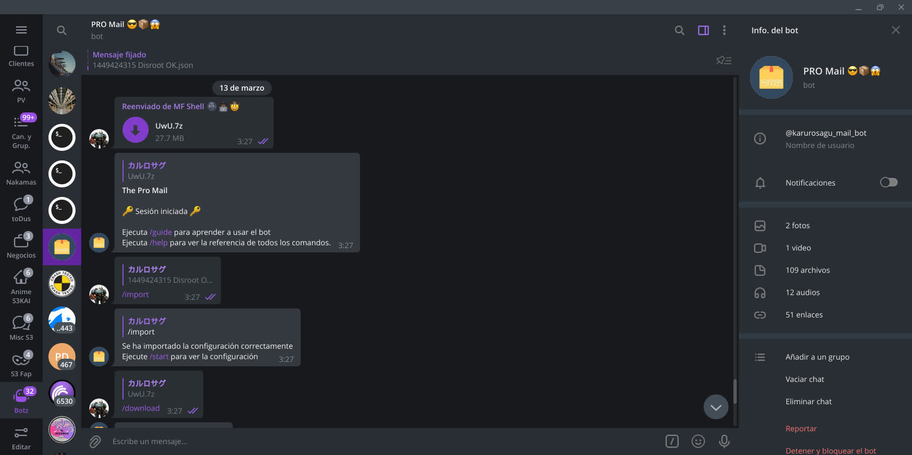
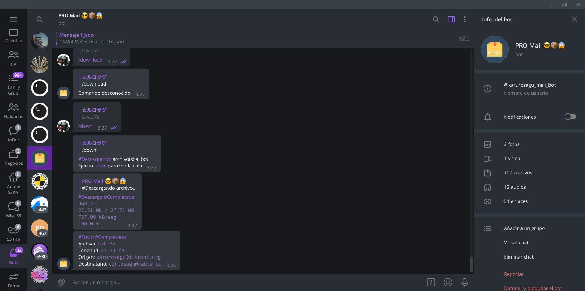
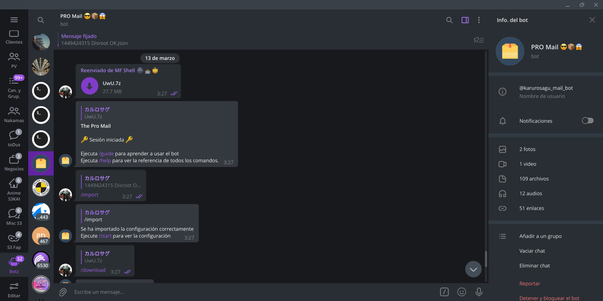
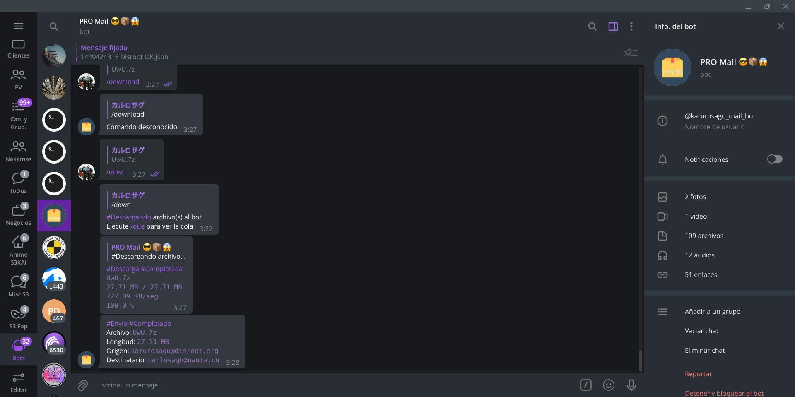

Bots Of Charles
Bots de Telegram
Este sitio no está completo todavía
El sitio viejo fue movido aquí


 




¿Qué es Bots of Charles?
Bots Of Charles (BoC) es un proyecto de bots de Telegram, cuyos centros de información son este sitio web y el canal de Telegram de igual nombre
Sitio web
En el sitio web (este sitio web) está toda la documentación de cada bot que pertenece al proyecto BoC. Sin importar qué otra documentación haya leído, la fuente principal de toda documentación posible se encuentra en este sitio
Canal
En el canal de Telegram se realizan publicaciones informativas principalmente sobre actualizaciones y horarios de mantenimiento de los bots. Para usar los bots es obligatorio ser miembro del canal
Grupo
El grupo dentro del canal es un grupo de soporte técnico. Si tiene una duda sobre cómo operar uno de los bots, primero debe haberse leído la documentación de dicho bot. Los idiomas válidos en el grupo son español e inglés solamente, para más información, léase las reglas del grupo una vez sea miembro